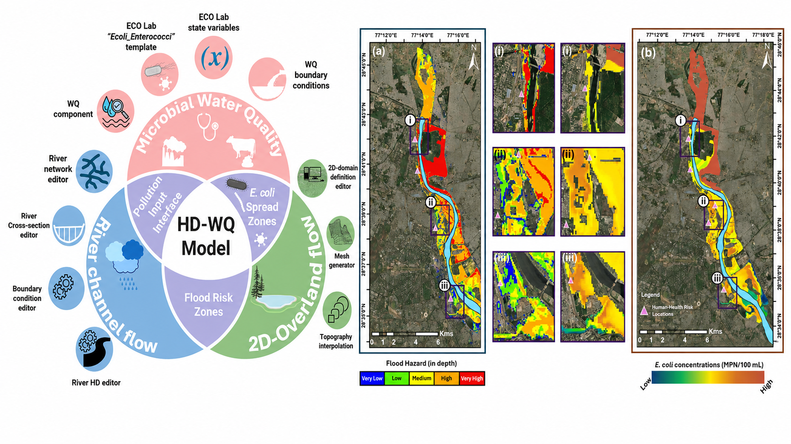

Featured Research
Water Research X · 2025
Urban Floods and the Health Risks They Carry
Yamuna Corridor, Delhi, 2023
Explore the Study

~63%Area under High to Very High Flood Hazard
>500 MPN/100 mlE. coli above safe bathing threshold across the corridor
0.79 – 0.96Annual infection probability (children highest)
22 kmWazirabad–Okhla Corridor, Yamuna River